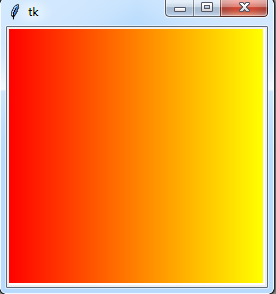
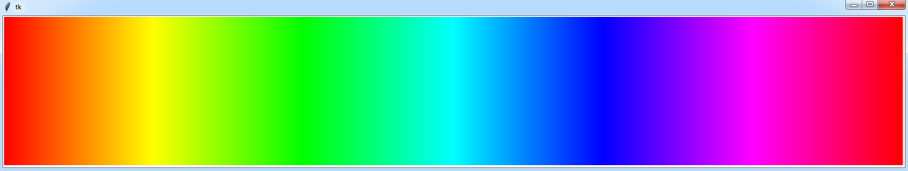

A. Напишите программу, которая получает на вход десятичное число и количество знаков и выдаёт в ответе число заданной длины в шестнадцатеричной системе счисления.
Используйте переменную hex_digits = '0123456789ABCDEF'
Подсказка: Последняя цифра числа в шестнадцатеричной системе счисления - остаток от деления числа на 16. Чтобы найти предпоследнюю цифру, нужно получить число без последней цифры, а для этого нацело поделить число на 16. Теперь предпоследняя цифра станет последней, и мы уже знаем, как её найти.
Пример:
| Вход | Выход |
|---|---|
10 2 | '0A' |
173 2 | 'AD' |
1012 4 | '03F4' |
B. Используйте предыдущую программу в качестве функции для новой программы, рисующей градиентную заливку прямоугольника с шириной 256 пикселей от красного цвета ('#FF0000') к жёлтому ('#FFFF00'). Первые две цифры шестнадцатеричного кода задают яркость красной составляющей, две средние цифры - яркость зелёной составляющей, две последние цифры - яркость синей составляющей.

Скопируйте заготовку для программы:
from tkinter import *
def hex(decimal, length):
# Эта функция получает на вход число в десятичной системе счисления и число знаков,
# на выходе даёт строку - число в шестнадцатеричной системе счисления.
hex_number = ''
hex_digits = '0123456789ABCDEF'
#########################################
# Мой код
#########################################
return hex_number
XMAX = 256 # ширина холста
YMAX = 256 # высота холста
# Создаётся графическое окно, на которое ссылается переменная root
root = Tk()
# Создаётся холст размером XMAX на YMAX с белым фоном, на который ссылается переменная canv
canv = Canvas(root, width=XMAX, height=YMAX, bg="#000000")
canv.pack() # холст размещается в окне
#########################################
# Мой код
# На холсте создаётся линия, цвет которой задан в шестнадцатеричной системе счисления
canv.create_line(100, 0, 100, YMAX, fill='#FF0000')
#########################################
# Графическое окно выводится на экран и готово реагировать на события
root.mainloop()
C. Напишите программу, которая рисует в прямоугольнике шириной 256 * 6 пикселей градиентную заливку от красного цвета ('#FF0000') к жёлтому ('#FFFF00'), от жёлтого - к зелёному ('#00FF00'), от зелёного - к голубому ('00FFFF'), от голубого - к синему ('0000FF'), от синего - к пурпурному ('FF00FF'), от пурпурного - к красному.
